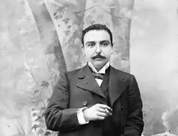

Գրիգոր Զոհրապ
Նորավեպի (նովել) չգերազանցված վարպետ, հասարակական գործիչ Գրիգոր Զոհրապի ստեղծագործությունները նշանակալի ազդեցություն են ունեցել արևմտահայ ռեալիստական գրականության վրա: Ժամանակակիցները նրան կնքել են Նորավեպի իշխան պատվանունով:
Կյանքը
Գրիգոր Զոհրապը ծնվել է 1861 թվականին Կ․ Պոլսի Պեշիկթաշ թաղամասում։ Հայրը՝ Խաչիկ էֆենդին, սարաֆ էր, բնիկ ակնեցի, մայրը ՝ Էֆթիկ հանըմը Մալաթիայից էր։ Գրիգոր Զոհրապը սովորել է ծննդավայրի Պեշիկթաշի Մաքրուհյան և Թարգմանչաց վարժարաններում: 1879 թ-ին ավարտել է Կ. Պոլսի ֆրանսիական ինստիտուտի երկրաչափական, 1882-ին՝ իրավագիտական բաժինները: Աշխատակցել է արևմտահայ մի շարք պարբերականների: Հակոբ Ասատուրի հետ հրատարակել է «Մասիս» (1892–93 թթ.) գրական հանդեսը: 1908– 1915 թթ-ին ընտրվել է օսմանյան պառլամենտի պատգամավոր և Կ. Պոլսի Հայոց ազգային ժողովի երեսփոխան. պաշտպանել է ազգային փոքրամասնությունների իրավունքները: Զոհրապը Մարսել Լեար ծածկանունով 1913 թ-ին Փարիզում հրատարակել է «Հայկական հարցը վավերագրերի լույսի ներքո» ֆրանսերեն գրքույկը և մեծ հեղինակություն ձեռք բերել նաև որպես քաղաքական գործիչ: 1883 թ-ից զբաղվել է փաստաբանությամբ, միաժամանակ իրավագիտություն է դասավանդել Կոստանդնուպոլսի համալսարանում: Ֆրանսիական բանակի սպա (ազգությամբ` հրեա) Դրեյֆուսի դատը պաշտպանելու համար պարգևատրվել է Դրեյֆուսի մանրանկարով ոսկե նշանով: Քաղաքական ակտիվության համար զրկվել է փաստաբանությամբ զբաղվելու իրավունքից: 1908 թ-ին մեկնել է Փարիզ. Կոստանդնուպոլիս է վերադարձել նույն թվականի հուլիսին՝ երիտթուրքերի պետական հեղաշրջումից հետո: Զոհրապը գրել է բանաստեղծություններ, նորավեպեր, ակնարկներ, վեպեր և այլն, սակայն առավել ճանաչվել է նորավեպերով: Բյուրեղացած ձևի ու փոքր ծավալի մեջ նա հասել է հոգեբանական խորության և կերտել բազմաթիվ կերպարներ՝ զարգացնելով ռեալիզմի ավանդները հայ գրականության մեջ: Նրա լեզվամտածողությունն առանձնանում է զուսպ ու դիպուկ ոճով, հոգեբանական նրբին պատկերների, համեմատությունների և մակդիրների արտահայտչամիջոցներով: Զոհրապի նորավեպերը լույս են տեսել 3 ժողովածուով՝ «Խղճմտանքի ձայներ» (1908 թ.), «Կյանքն ինչպես որ է» (1911 թ.), «Լուռ ցավեր» (1911 թ.): Մի շարք նորավեպերում գրողը նրբորեն բացահայտել է մարդկային ողբերգության սոցիալական ակունքները: «Ճիտին պարտքը» նորավեպի հերոսը՝ վաճառական Հուսեփ աղան, սնանկացել էր և կնոջ մահից հետո չէր կարողանում հոգալ տան ու 2 անչափահաս աղջիկների կարիքները: Դժբախտ մարդը, ապարդյուն մաքառելով հոգսերի դեմ, ինքնասպան է լինում: Իրեն ծովը նետած Հուսեփի վզից կախված էր քարերով լցված պայուսակը՝ «ճիտին պարտքը»: «Մագթաղինե», «Այրին», «Փոստալը» նորավեպերի հերոսուհիները թշվառ ու լքված, կյանքի հարվածների տակ կքած կանայք են: Զոհրապն առանձնակի քնքշությամբ է անդրադարձել սիրո թեմային: «Այինկա», «Ռեհան», «Առջի սեր, առջի բարի», «Զաբուղոն», «Ճեյրան» նորավեպերում սիրո դրաման քննել է երջանկության, բարոյականության, գեղեցկության և այլ բարձր արժեքների լույսի ներքո: Կյանքի ու մահվան, սիրո և երջանկության հավերժական խնդիրների, մարդու ներաշխարհի անլուծելի առեղծվածների մասին են «Երջանիկ մահը», «Մյուսը», «Կարծեմ թե» նորավեպերը: Զոհրապի հերոսները կյանքում իրենց տեղը չգտած մարդիկ են՝ տխուր առօրյայով, անհույս ճակատագրով: Գրողը մեծ սիրով է անդրադարձել «փոքր», հասարակ մարդկանց հոգու գեղեցկությանն ու վեհությանը: Զոհրապի նորավեպերը ժամանակի կյանքի հայելին են ու ճշմարիտ վկայությունը: Գրողի ստեղծագործական ժառանգության կարևոր էջերից են «Անհետացած սերունդ մը» (1883 թ.) վեպը, որտեղ պատկերել է պոլսահայ երիտասարդության կյանքը, «Չինական նամականի» (1884 թ.), «Ուղևորություն մը հիշատակներուս մեջ» (1898–1903 թթ.) հրապարակախոսական ակնարկները, «Անբարոյական գրականություն» (1892 թ.), «Նոր լրագրություն» (1892 թ.) քննադատական հոդվածները, «Ծանոթ դեմքեր» (1891– 1909 թթ.) գրական դիմանկարների շարքը: Զոհրապը ձերբակալվել է 1915-ի մայիսի 20-ին և սպանվել աքսորի՝ Ուրֆայից Դիարբեքիր տանող ճանապարհին:
«Մեր ժողովրդական լեզուն պիտի զարգանա.... ոչ թե հնին դառնալով, այլ այդ լեզուն խոսող հասարակության իմացական կարողության համեմատությամբ.... Ժողովուրդն է միայն, որ կդարբնե լեզուն կյանքի ամենօրյա սալին վրա՝ իր կամքին, պետքին, զգացմունքներուն ու հաճույքին համեմատ»:
Գրիգոր Զոհրապի քաղաքական գործունեությունը

Զոհրապը հմուտ իրավաբան էր: Ժամանակակիցները վկայում են, որ նա իր ամբողջ փաստաբանական գործունեության ընթացքում ոչ մի դատ տանուլ չի տվել: Նա սուլթանական դատարանում միշտ պաշտպանում էր հանիրավի ամբաստանված հայերի, հույների, բուլղարների և այն այլազգի անմեղների դատը, որոնք սովորաբար հետապնդվում էին օսմանյան բռնատիրության դեմ ըմբոստանալու համար՝ հանուն իրենց ազգային ու մարդկային իրավունքների: Դա դուր չէր գալիս իշխանություններին, և միառժամանակ Զոհրապին արգելում են զբաղվել փաստաբանությամբ: Բայց դա չի ընկճում մեծ մարդասերին, նա չթուլացող եռանդով շարունակում է իր պայքարն ազատության, արդարության ու ճշմարտության համար: Հասարակական գործունեությանը զուգընթաց Զոհրապը նվիրյալի եռանդով մասնակցում էր նաև գրական կյանքին: Սուլթան Համիդի բռնապետության օրերին, երբ մտավորականներից շատերը հեռանում են երկրից, նա մնում է Կ.Պոլսում՝ շարունակելով հանդես գալ մամուլում հրապարակախոսական և գրական-քննադատական հոդվածներով՝ նվիրված հասարակական ու գրական կյանքի հրատապ խնդիրներին: 1908թ. Թուրքիայում տապալվում է սուլթան Համիդի միապետությունը, հաստատվում են սահմանադրական կարգեր: Իշխանության գլուխ անցած «Երիտասարդ թուրքեր» կուսակցությունը սկզբում հանդես էր գալիս կեղծ ժողովրդավարության դիմակով: Թուրքական մեջլիսի (խորհրդարան) պատգամավորներ էին ընտրվում նաև ազգային փոքրամասնություններից: Զոհրապն ընտրվում է մեջլիսի հայ պատգամավոր: Պառլամենտում նա շարունակում է իր կրքոտ ելույթները՝ պաշտպանելով ազգային փոքրամասնությունների շահերը: Սակայն նոր իշխանությունների դիմակավոր խաղը երկար չի տևում: Շուտով նրանք ցույց են տալիս իրենց իսկական դեմքը՝ 1909թ. կազմակերպելով Կիլիկիայի հայության կոտորածը: Այդ քաղաքականությունը շարունակվում է նաև հետագայում և հանգեցնում 1915թ. Մեծ եղեռնին, որին զոհ գնաց մեկուկես միլիոն հայ: Ա Զ Գ Ա ՅԻՆ Փ Ր Կ Ո Ի Թ ՅԱ Ն Ջ Ո Հ Ր Ա Պ ՅԱ Ն ԾՐԱԳԻՐԸ Օգտագործել Սահմանադրության ընձեոած բոլոր հնարավորությունները։ Նպաստել, որ իսլամ ժողովուրդն էլ համակվի փոփոխությունների նոր գաղափարներով։ Համախմբվել, միաբանվել, որովհետև օրհասը մոտենում է։ Առաջին քայլը համախմբել ուժերը, վերջ տալ աոանձին ու մասնատված ջանքերին, որ աղետից բացի ագգին ոչինչ չբերեցին։ Ցոհրապը գնահատում էր հայ քաղաքական ուժերին, կուսակցություններին, համագործակցում էր բոլորի հետ, բայց կուսակցական չդարձավ։ Ոչ մեկին չծառայեց, ոչ մեկին չհավատաց։ Աստվածային իր հանճարը, որով կերտում էր մեկը մեկից չքնաղ նովելներ, գրական իր հանճարը, որ նրան դարձրեց Եվրոպական գրականության աոաջին դեմքերից մեկը, ահա այդ հանճարը հստակորեն բացում էր նաև ապագան, որտեղ նա լուսավոր ոչինչ չէր տեսնում։ Եղեռնն անխուսափելի էր ամենից լավ դա ինքը գիտեր, ինքը, որ շփվում էր թուրք իշխանական վերնախավի հետ, որ Պոլսո փողոցներում նայում էր հասարակ թուրք ժողովրդի, թուրք ամբոխի աչքերին ու կարդում էր սպասումը նոր ջարդի։ Նրան Պոլիս էր բերել իր գաղտնի ծրագիրը։ Եվ ահա իր ծրագրի առաջին քայլը համախմբել ուժերը։ Դրա համար որոշել էր նոր թերթ բացել «Նոր օր» անունով։ Խմբագիրների պաշտոնը որոշել էր հանձնել Ռուբեն Զարդարյանին և Վահան Թեքեյանին, լրագրի քարտուղար պիտի դառնար Արամ Անտոնյանը։ Միջոցներ էր որոնում թերթի տպագրության համար, դեռ չգիտեր, որ իրեն թույլ չեն տալու, և այդ հարցում աոաջին խանգարողը հայ միջավայրն է լինելու։ Իրեն լսում ու չէին հասկանում, երբ ասում էր. «Նոր օրը» մեր ագգային պաշտպանության հզոր գործիք մը պիտի դարձնեմ»։ Իր բոլոր ընկերներին հրավիրում էր աշխատակցության, ապագա թերթի ուղղությունն էր որոշում։ Շատ լավ ճանաչելով երիտթուրքերին, միշտ շեշտում էր, որ պետք է օգտվել առիթից, քանի դեռ նոր թուրքերը բարեկամության ժեստեր են անում, ճգնում են ճշմարտապես ագնիվ ու ազատամիտ երևալ, մասնավորապես հայերի հանդեպ ամեն առիթով բարեկամության ապացույցներ են տալիս հայերը դրանից պետք է օգտվեն։